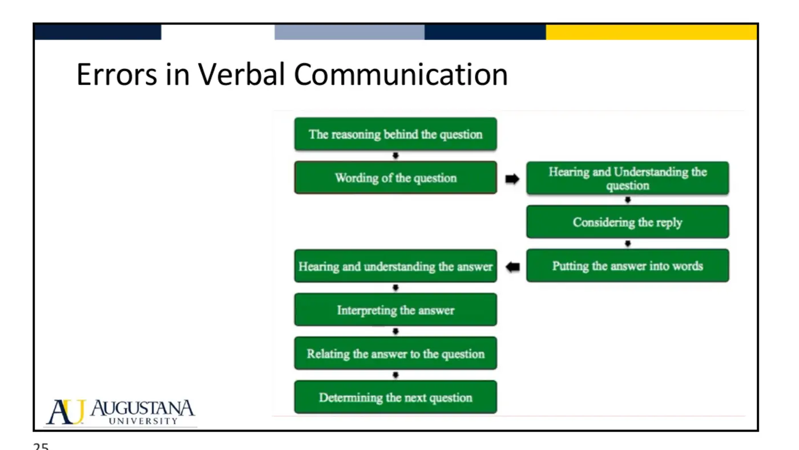
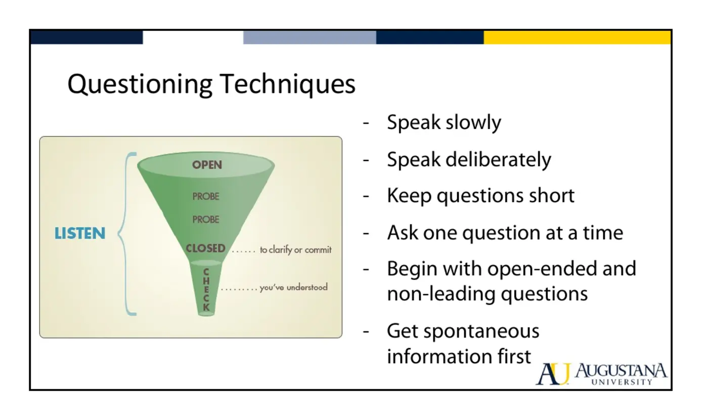

Physical Therapy Fundamentals · 6211
Module 8 — Tying the Examination All Together — Communication
Topic 8.1: Communication — verbal, non-verbal, empathy, cultural sensitivity, and the patient-centered interview
📖 How to Use These Notes
- Best used with the lecture playing — keep these open, follow along, and add your own notes as you watch
- Lecture banners mark the start of each topic and run in the same order as the videos
- 🎙 Callouts = direct insights from the instructor's transcript
- ★ Tips = exam-relevant content or things the instructor told you to prepare
- Figures are taken directly from the module's slide decks
- Each topic ends with its own Quick-Reference Glossary
- Written from last year's recordings — if a lecture has been re-recorded or resequenced, Canvas wins
- Dr. Bartley, 26:18 — watch it in your own Canvas module
- The final module of PT Fundamentals. Canvas describes it as circling all the way back to the first question: how do we introduce ourselves and communicate with patients?
- Fair warning: the audio opens with “welcome in, to start things off here in PT Fundamentals” — this was recorded as the FIRST lecture and is now placed last. Where it says “down the road” about documentation, that's Module 7
- One objective (4.1) — but it underwrites Modules 1–7, and it's item 10 on the final-exam concept list
TOPIC 8.1
Communication
“Listen to your patient, they're telling you the diagnosis.” — William Osler, founding faculty at Johns Hopkins and one of the fathers of modern medicine. That quote opens the deck, and it's the whole argument in one line.
1. Vocabulary
| Term | Definition |
|---|---|
| Verbal communication | The actual language used, the tone, the pacing and speed — and the intent behind the words |
| Non-verbal communication | Facial expressions · voice volume · posture · touch · gestures · physical closeness · eye contact · and your eye level — standing over them, seated next to them, or seated in front of them |
| Values | Characteristics one deems important — valuing honesty, for instance |
| Beliefs | Assumptions made from your own life experience — that a dishonest person can't be trusted |
| Bias | A tendency or inclination, often unconscious, that influences perception or decision-making for or against a person, group, idea, or thing |
| Empathy | Understanding and sharing another person's feelings, thoughts, and experiences without necessarily experiencing them yourself |
| Cultural sensitivity | Awareness, understanding, and respect for different cultural backgrounds and practices |
2. Why This Gets Its Own Module
- Professional communication is taught in most professional-level programs but rarely emphasized. And when you pool everything patients and the public say they disliked about a healthcare encounter into one bucket, the common source is poor communication. Three means exist — verbal, non-verbal, and written (that's documentation, Module 7). This module is the first two.
📡 Effective communication = message SENT equals message RECEIVED
- We filter all new information against something we already know — so a receiver who isn't ready won't receive it accurately
- That built-in bias is exactly why openness, non-judgment, and real curiosity about the patient's perspective are technique, not manners
- You must be able to do BOTH: skillfully choose words and phrases to form the question, AND hear and understand the answer
- Same on the non-verbal side: observe and interpret the patient's cues, and stay aware of your own
3. Hearing vs Listening, Seeing vs Observing
| HEARING / SEEING | LISTENING / OBSERVING |
|---|---|
| Passive | Active |
| Voluntary | Demands attention |
| Natural — it happens whether you invest or not | An acquired discipline — you get better at it on purpose |
(Jeff Maitland, quoted in the deck: “Listening is itself, of course, an art. That is where it differs from hearing.”)
- What listening buys you: new information · better understanding of the patient · rapport · a therapeutic effect in itself — often exactly what the patient came for. It only works if you hear AND understand; hearing the words isn't enough.
| Show active listening… | …like this |
|---|---|
| Verbally | Repeat back to the patient what you think you heard |
| Non-verbally | Position yourself so they can see you making eye contact · write things down as they speak, so they know they're being heard · let your facial expressions register the new information |
4. Patient Cues — the Percentages
| Cue type | Share of the message | What it carries |
|---|---|---|
| Verbal cues | ≈ 7% | The words themselves |
| Vocal cues | ≈ 38% | Pace, speed, tone — where you hear nervousness or anxiety |
| Facial cues / non-verbals | up to 55% | The majority of what the patient is telling you |
5. Empathy, Sensitivity, and Shared Experience
- You have to want to know your patient — which doesn't mean befriending all of them. It means having an interest in their story and in how that story helps you walk alongside them: what does it tell you about the interventions, treatment, and education that will actually work for this person?
6. Errors in Verbal Communication

- The chain: the reasoning behind the question → wording of the question → hearing and understanding the question → considering the reply → putting the answer into words → hearing and understanding the answer → interpreting the answer → relating the answer to the question → determining the next question. A disruption at any one step derails the whole exchange — including the classic failure of not listening because you're waiting to talk, already certain what you want to say.
THE PATIENT INTERVIEW
Patient-Centered, and Teachable
7. What Patient-Centered Means
- The patient's thoughts, perceptions, feelings, and expectations sit at the center of the interview. The good news the lecture stresses: this can be taught, can be learned, and is retained with practice — through the program, into clinical rotations, and across a licensed career.
| Understand how the patient experiences illness | Why it changes your plan |
|---|---|
| Who are they? | Culture often shapes how illness is experienced — do they keep it to themselves, or outwardly display illness behavior to communicate what they're feeling (or think they're supposed to feel)? |
| What do they want from this interaction? | You need shared goals for the management process to get an optimal outcome |
| What are their perceptions and feelings? | Glass half full or glass half empty? That guides your decisions and your intervention choices |
📈 What a patient-centered interview buys you
- Improved outcomes and more satisfied patients
- More satisfied providers — and greater efficiency
- Decreased anxiety
- Decreased malpractice claims — patients who know they were heard sue less, even when mistakes happen or the outcome disappoints
- And it takes no more time than the biomedical alternative, where the interest is the tissue rather than the person
8. Rapport
- Three components of the interview: establish rapport → use skillful questioning techniques → maintain control of the interview at all times.
🤝 What establishing rapport actually produces
- Increased physical functioning of your patients
- More likely to adhere to your recommendations
- Less likely to request narcotic medication after surgery
- Less likely to go looking for new physicians or providers
- Less likely to sue for malpractice
9. Questioning Techniques — the Funnel

- Rules: speak slowly · speak deliberately · keep questions short · ask one question at a time — no multi-step questions · begin open-ended and non-leading · get spontaneous information first · pause and let them think · keep your own non-verbals appropriate · don't overreact to what's said · confirm understanding with a feedback loop · guide and control the interview.
10. Open vs Closed
- Open-ended questioning lets the patient describe the problem in their own terms and leaves you free to choose what to ask next instead of marching down a list. It's where hypothesis development starts. Your opening statement sets the tone: “Why are you here?” is open. “It looks like you're here for shoulder pain” is not — and it will get you a different answer.
⏱ The number to remember
- In primary care, opening with an open-ended question produces an average 27-second problem presentation
- Opening with a closed-ended question produces an average 11-second one
- The fear is that an open question costs you eight minutes. The reality is a little more time — and a great deal more spontaneous information
| OPEN — ask these | CLOSED — the same question, worse |
|---|---|
| “What makes your pain worse?” | “Does bending increase your pain?” |
| “What happens to your pain at night?” | “Does the pain worsen at night?” |
| “Can you describe your pain?” | “Is your pain dull or sharp?” |
- Why closed questions cost you: they can bias the patient into giving what they think is the correct answer — or, when their real experience doesn't match your options, leave them feeling disbelieved or like they're in the wrong place.
11. Maintaining Control of the Interview
- Sometimes a respectful, professional disruption is the right call — when the information coming at you exceeds your ability to assimilate it and you need to separate the signal from the noise. Techniques: redirect with a question · speak slightly more loudly to signal moving on · a gentle raise of the hand · a hand on the patient to interrupt the train of thought. What NOT to do is the deck's own illustration: sitting there with your hand held high, making the patient feel that what they have to say doesn't matter.
12. The Closing Quote
“Good communication is an art.” — attributed in the deck to Gail Jensen, PT and educator at Creighton University, from a 1990 publication. Bartley's point: your ability to communicate is not the same as your neighbor's, your lab partner's, or your patient's. Which is why it gets practiced rather than assumed — here, in your rotations, and for the rest of your career.
📖 Required reading — Topic 8.1
- Beck, Daughtridge & Sloane. Physician-Patient Communication in the Primary Care Office: A Systematic Review (in this Drive folder)
- The Four Habits Model — Getting the Most out of the Clinical Encounter (bundled handout)
Topic 8.1 — Quick-Reference Glossary
| Term | Definition |
|---|---|
| Verbal vs non-verbal | Words, tone, pace, intent vs face, volume, posture, touch, distance, eye level |
| Values vs beliefs | What you deem important vs assumptions from your experience |
| Bias | Often unconscious — impossible to eliminate, possible to mitigate |
| Empathy | No need to have lived it |
| Sent = received | The definition of effective communication |
| Hearing vs listening | Passive/voluntary/natural vs active/attentive/acquired |
| 7 / 38 / 55 | Verbal · vocal · facial share of the message |
| Shared experience | Racial, cultural, ethnic — and geographic and social |
| Three interview components | Rapport · questioning technique · control |
| 27 vs 11 seconds | Open-ended vs closed-ended problem presentation |
| The funnel | Open → probe → closed → check, listening throughout |
| Whose responsibility | Yours — to engage the patient who arrives unengaged |